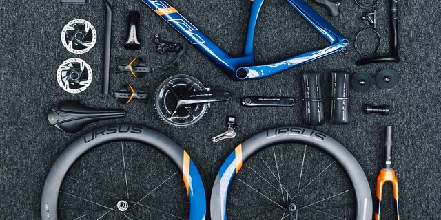
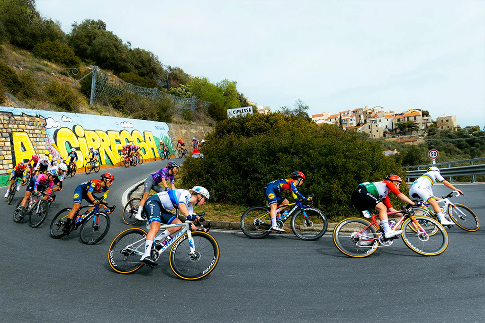

Shimano vs SRAM: quale gruppo scegliere
Precisione giapponese contro innovazione americana: scopri le differenze tra i gruppi trasmissione più famosi e quale si adatta meglio al tuo stile di guida.
Approfondisci

I componenti essenziali di una bici da corsa
Dal telaio alle ruote, dai freni alla trasmissione: guida completa ai componenti che rendono una bici performante e sicura, con consigli per ogni livello.
Approfondisci

Come scegliere la bici da corsa ideale
Materiali, geometrie, allestimenti e budget: tutte le informazioni per trovare la bici perfetta per le tue esigenze, dal principiante al professionista.
Approfondisci